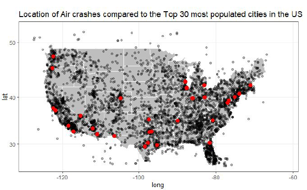

Dans ce cours, nous avons d'abord vu l'utilité du Big Data appliquée au monde de l'IoT. En effet, les capteurs peuvent générer un grand nombre de donnée qu'il faut ensuite pouvoir utilisées. Pour cela, on peut utiliser des langages de programmation comme le Python ou le R. Dans notre cas, il nous a été demandé de faire du R. Ce langage de programmation a été spécialement conçu pour cette application le rendant plus rapide que les autres et plus simple au niveau du code pour l'utilisation des listes.
Afin de montrer l'acquisition de cette matière, Loïc, Evan et moi avons réalisé un article sur le sujet de notre choix en s'appuyant sur des graphes que l'on a réalisé. Pour cela, nous avons pris un dataset sur le thème des crashs d'avion. Il a donc fallu
trier, ordonner et remplir les données pour faciliter l'affichage des graphes et ensuite trouver des liens entre chaque colonne pour construire notre article.
On a choisi de se poser cette question : What are the different parameters that cause accidents ?
Après avoir trouvé le sujet, je me suis occupé de réalisé la carte des USA en référençant les zones d'accidents fatals d'avion. Pour mieux se repérer, j'ai rajouté les grandes villes américaines.

La partie la plus dure dans le Big Data est d'avoir un bon data set. Si il y a de nombreuses valeurs manquantes, il va être impossible à exploiter. Prenons un exemple, si on regarde le pourcentage d'accidents pour un modèle d'avion mais que plus de 50% des données sont manquantes, il va être impossible de déduire si cette avion est fiable. En effet, la moyenne va être fossé par l'absence d'informations.
J'ai pu mobilisé de nouvelle compétence en R qui est nouveau pour moi. Ainsi, je suis capable de traîter un grand nombre de donnée que ce soit pour des capteurs ou d'autres data sets en général. De plus, j'ai pu améliorer ma qualité de rédaction en anglais pour le rapport disponible en annexe.
Ayant fait du Big Data en python en 4e année et avec la découverte du R, je me suis posé la question de quelle langage serait le plus performant pour de grosse analyse de donnée (plusieurs millions de valeurs). En regardant sur les articles scientifiques, il n'y a pas de réel différence mais plutôt un avantage sur la facilité d'utilisation du R. Néanmoins, le R n'est utilisé que dans un seul domaine contrairement au Python.